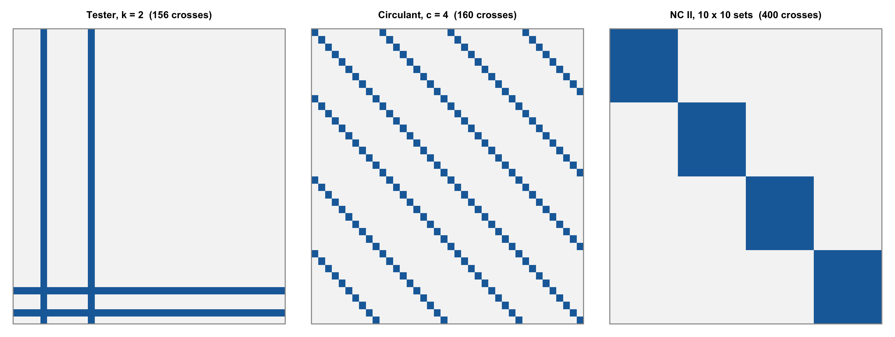
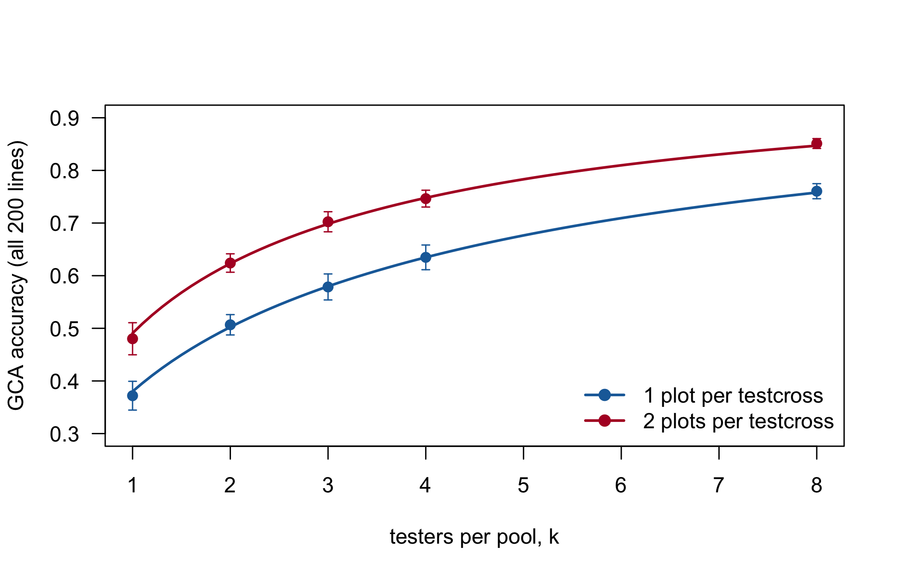
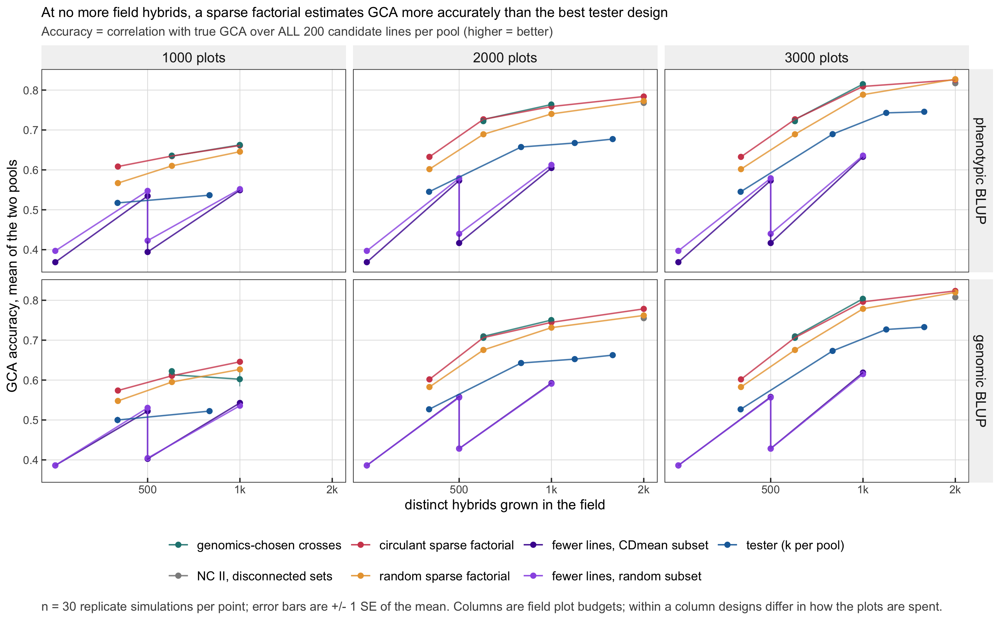
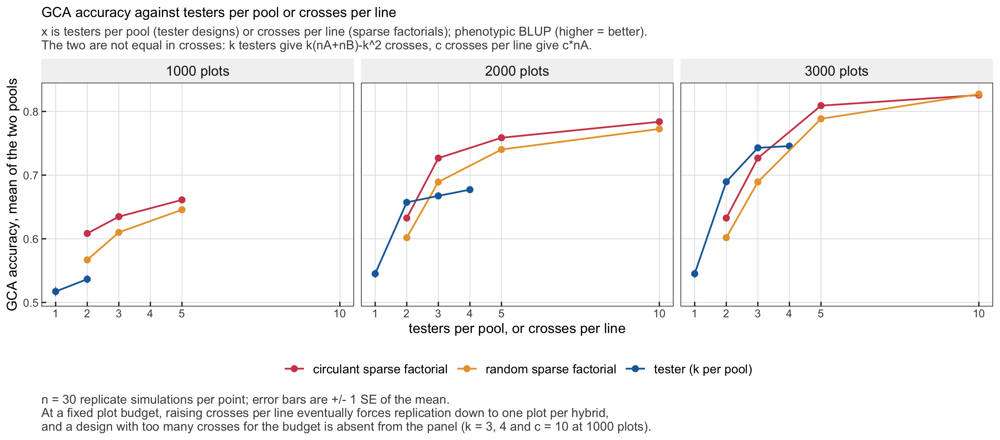
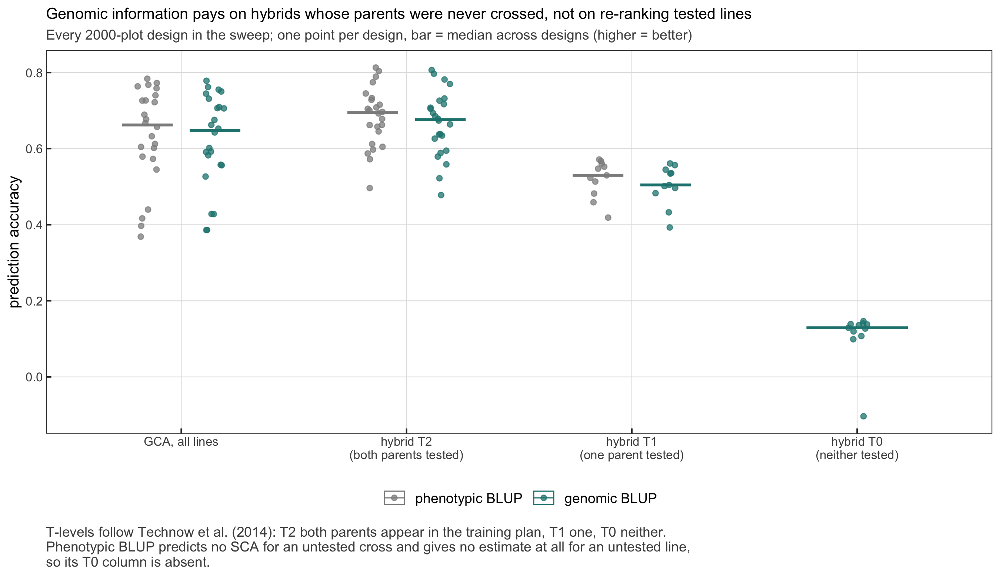
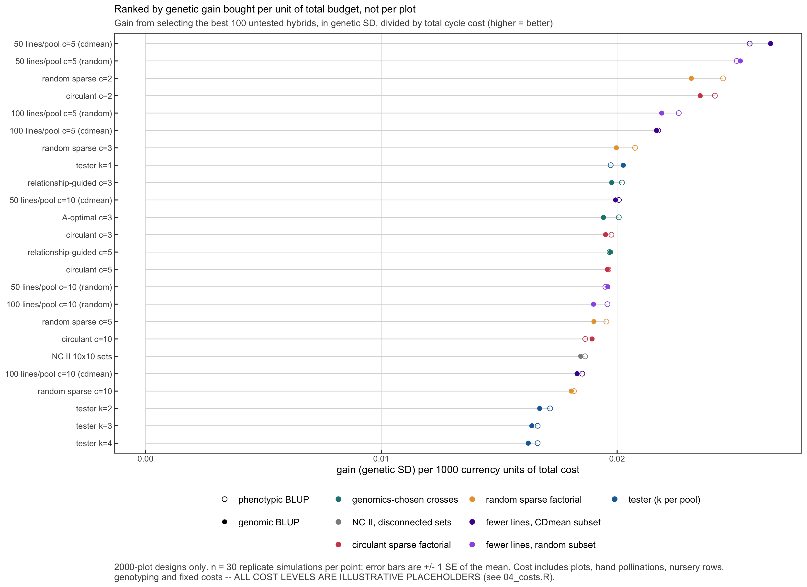
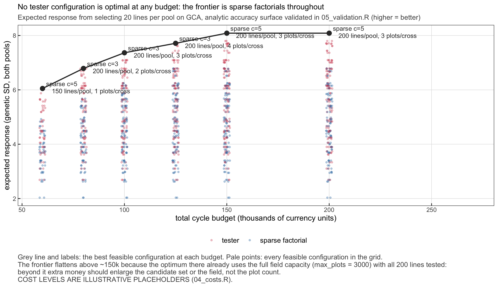
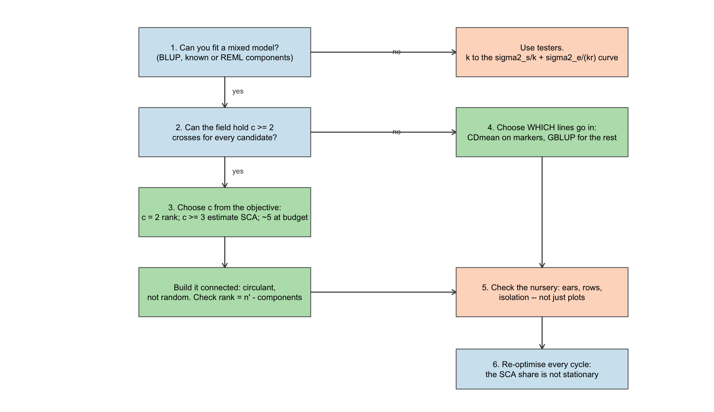

9How few hybrids are enough? Mating designs for a two-pool programme
Every chapter before this one took the hybrids as given. Chapter 7 made a commercial cross at the end of a reciprocal scheme, Chapter 4 derived populations from crosses already chosen, and the selection problems of the Optimisation part all start from a list of hybrids with predicted values. None of them asks where that list came from.
It comes from a crossing plan, and the crossing plan is the most constrained decision a hybrid programme makes. Two pools of 200 candidate lines each define a factorial of 40,000 single crosses. A field holds 1,000 to 3,000 plots. Every hybrid programme is therefore choosing a sample of a factorial whose cells are overwhelmingly empty, and the classical tester – every candidate crossed to one or two lines of the opposite pool – is one sample among many. This chapter treats the choice of sample as the design problem it is, and defends three results:
At equal field size, a connected sparse factorial among the candidates estimates general combining ability better than a tester design, at every budget studied, by 0.08 to 0.13 correlation points.
The analysis matters more than the design. Analysed by least squares, the sparsest factorials are the worst designs in the study; analysed by BLUP, they are among the best. The penalty for the wrong estimator is the largest single effect measured.
Genomic information buys inference about lines that were never crossed, not better estimates for lines that were. Where every candidate is in the field, genomic kernels did not raise GCA accuracy; where only a quarter of them were, they did.
The running example throughout is one simulated maize programme: two heterotic pools, 200 doubled-haploid candidates per pool, a field of 1,000 to 3,000 hybrid plots, and a winter nursery that must physically produce the seed of every cross that enters the field.
NoteWhere the numbers come from
Two sources, and the chapter keeps them apart. Live results are computed at render time with the base-R design functions of R/16_mating_design.R – design generators, the connectivity diagnostic, least-squares and BLUP estimators with known variance components, and the cost model. Cached results come from a separate study (sparsex) that founded the pools in AlphaSimR, estimated variance components by REML, fitted genomic kernels and swept 24 designs x 3 plot budgets x 30 replicates x 3 models. That sweep needs AlphaSimR and an external REML check against sommer, and is not reproducible from this repository; its tables are in book/data/mating_*.csv and its figures in book/figs/mating_*.png. The phenotypic core of it is reproduced in-repo (Rscript book/scripts/regenerate.R mating), and the two are compared in Section 9.10.
9.1 Why the crossing plan is the binding decision
The crossing plan, not the statistical model and not the marker platform, sets the ceiling on what a hybrid programme can learn in a cycle. Which lines can be ranked, whether specific combining ability is estimable at all, how many plots each hybrid can occupy, whether untested combinations can be predicted – every one of these is fixed the moment the nursery plan is written. A mixed model fitted afterwards can only extract what the plan put there.
The arithmetic is unforgiving. A 200 x 200 factorial against 1,000 to 3,000 plots is a sampling fraction of 2.5 to 7.5 % at one plot per hybrid, and below 2 % once replication is required. Three decisions are usually conflated inside “the testing plan”, and it pays to separate them:
which lines enter the field at all – every candidate, or a subset chosen by some criterion;
which crosses among those lines are made – to a common tester, to each other in a sparse pattern, or in complete blocks;
how many plots each cross receives – replicates and locations.
The organising question of the chapter follows: for a fixed budget, which sample of the factorial maximises the accuracy of combining-ability estimates and the selection response they support? And one constraint is stated now, because it is the one most often forgotten: a crossing plan is not a matrix, it is a nursery. Each filled cell is a pollination that must yield enough seed for its plots.
The three canonical samples drawn over the same grid make the difference visible before any statistics. The plans below are produced by the package’s generators, at 40 x 40 so that individual cells can be seen:
set.seed(3)grids <-list("Tester, k = 2"=design_tester(40, 40, k =2),"Circulant, c = 4"=design_circulant(40, 40, c =4),"NC II, 10 x 10 sets"=design_nc2(40, 40, 10, 10))op <-par(mfrow =c(1, 3), mar =c(1, 1, 2.2, 1))for (nm innames(grids)) { M <-matrix(0, 40, 40) M[cbind(grids[[nm]]$parent1, grids[[nm]]$parent2)] <-1image(t(M[40:1, ]), col =c("grey96", "#1b6ca8"), axes =FALSE,main =sprintf("%s (%d crosses)", nm, nrow(grids[[nm]])), cex.main =0.9)box(col ="grey60")}par(op)

Figure 9.1: Three samples of the same 40 x 40 factorial, drawn by the package’s own generators. Rows are pool-A lines, columns pool-B lines, a filled cell is a cross that goes to the field. Left: two testers per pool (156 crosses). Centre: a circulant sparse factorial with four crosses per line (160 crosses). Right: North Carolina Design II as four disconnected 10 x 10 blocks (400 crosses).
The tester fills two full columns and two full rows: every line meets the same partners, so lines are compared on a common background but the background is narrow. The circulant design spreads the same number of crosses as thin diagonals: every line meets different partners, every line is crossed exactly four times, and – the property that the next section shows to matter – every line is linked to every other through a chain of shared partners. NC II fills more cells than either and still cannot compare a line in the first block with a line in the second.
9.2 Combining ability as an estimation problem
General and specific combining ability are properties of a reference population of crosses, and a design estimates them only to the extent that it samples that population. Sprague and Tatum (1942) defined them; Griffing (1956) drew the distinction between fixed-effect inference about a specific set of parents and random-effect inference about the population they were drawn from; Comstock and Robinson (1948) designed the North Carolina layouts to separate their variances, and Comstock et al. (1949) built reciprocal recurrent selection on them – the direct ancestor of the two-pool programme.
9.2.1 The model
At the level of a cross mean, the two-pool model is
with \(g^A\), \(g^B\) the GCA of the pool-A and pool-B parent, \(s_{ij}\) the SCA of the pair, and \(r_{ij}\) the plots the cross received. Section 11.10 derived exactly this decomposition from allele frequencies, for the heterosis part of the hybrid value, and showed that a pool-A line’s GCA is an average effect evaluated at pool B’s frequencies. With an additive effect \(a_k\) added to the dominance deviation \(d_k\), the general combining ability of pool-A line \(i\) is
the classical structure of Stuber and Cockerham (1966) for a cross between two populations. The additive part adds a term and changes nothing else, which is quick to confirm: the row effects of a complete factorial of genotypic values equal cU %*% a plus the gca_A of heterosis_gca_sca(), with no second implementation.
set.seed(7)m <-300pA <-runif(m, 0.1, 0.9); pB <-runif(m, 0.1, 0.9)U <-matrix(rbinom(30* m, 1, rep(pA, each =30)), 30) # 30 inbred lines, pool AV <-matrix(rbinom(25* m, 1, rep(pB, each =25)), 25) # 25 inbred lines, pool Ba <-rnorm(m, 0, 0.3); d <-rnorm(m, 0.2, 0.2)# Genotypic value of every single cross: a(u + v - 1) + d * heterozygosityG <-outer(seq_len(30), seq_len(25), Vectorize(function(i, j)sum(a * (U[i, ] + V[j, ] -1) + d * (U[i, ] + V[j, ] -2* U[i, ] * V[j, ]))))cs <-heterosis_gca_sca(U, V, d)gcaA_formula <-drop(sweep(U, 2, colMeans(U)) %*% a) + cs$gca_Ac(max_abs_diff =max(abs((rowMeans(G) -mean(G)) - gcaA_formula)))#> max_abs_diff #> 2.04281e-14
Result. The row effects of the complete factorial and the closed form agree to machine precision. Interpretation. “True GCA” in this chapter is always this quantity – the row and column effects a breeder would estimate by growing every hybrid without error – and every accuracy reported is a correlation with it, over all candidates of a pool, crossed or not.
9.2.2 Four quantities that control a design
Table 9.1: The four quantities of a two-pool mating design, their closed forms and what controls them.
Quantity
Closed form
Controlled by
Rank of the GCA design matrix \([\mathbf 1 \mid Z_A \mid Z_B]\)
\(n_A' + n_B' - (\text{connected components})\)
which crosses are made: the bipartite graph
Residual df for SCA at cross-mean level
\(n_{\text{crosses}} - \text{rank}\)
crosses per line; zero for one tester per pool
LS sampling error of a GCA estimate, \(c\) crosses per line
The third row is the quantitative form of the argument of Sprague and Tatum (1942) for using more than one tester, and the fourth is its square root as an accuracy: the square root of the heritability of a testcross mean (Hallauer et al. 2010). Both describe least squares. A shrinkage estimator on a connected design borrows information across lines and exceeds them, which is why Section 9.5 exists.
The cached run validated the third and fourth rows against simulation in the complete 200 x 200 factorial, for \(k = 1, 2, 4, 8\) testers and \(r = 1, 2\) plots:
Table 9.2: Least-squares GCA accuracy in a k-tester design: simulated (30-replicate mean, testers resampled) against the closed form. Cached from the sparsex validation suite, check V4.
design
simulated
closed_form
rel_error_pct
k=1 r=1
0.394
0.391
0.826
k=1 r=2
0.499
0.503
-0.840
k=2 r=1
0.509
0.515
-1.094
k=2 r=2
0.639
0.635
0.534
k=3 r=1
0.593
0.592
0.108
k=3 r=2
0.713
0.710
0.500
k=4 r=1
0.646
0.647
-0.119
k=4 r=2
0.758
0.758
-0.065
k=8 r=1
0.772
0.768
0.520
k=8 r=2
0.855
0.855
0.075
The largest relative error is 1.1 %. The expression is a reliable description of least squares on a tester design, and the cost optimiser of Section 9.7 uses it for that reason – knowing it is conservative for anything shrunk.
9.2.3 Connectivity, in one paragraph
ImportantThe rank rule
A mating design is a bipartite graph: pool-A lines on one side, pool-B lines on the other, an edge for every cross. GCA contrasts are estimable within a connected component of that graph and not between components, so the rank of the GCA design matrix is \(n_A' + n_B' - (\text{components})\), one lost constraint per component. That is the formal content of what breeders call “ties between sets”, and it was settled long ago: Weeks and Williams (1964) gave the criterion for an \(N\)-way classification and Fernando et al. (1983) an algorithm for the connected subsets of a two-way one.
design_diagnostics() computes both sides of the rule independently – the numerical rank by QR, the components by union-find over the graph – so a disagreement would be a bug, not a modelling choice:
set.seed(2026)plans <-list("tester k=1"=design_tester(n, n, 1),"tester k=2"=design_tester(n, n, 2),"random sparse c=2"=design_random_sparse(n, n, 2),"circulant c=2"=design_circulant(n, n, 2),"circulant c=5"=design_circulant(n, n, 5),"NC II 10x10 sets"=design_nc2(n, n, 10, 10))diag_tab <-do.call(rbind, lapply(names(plans), function(nm) { d <-design_diagnostics(plans[[nm]], n, n)data.frame(design = nm, crosses = d$n_crosses,untested =2* n - d$lines_A - d$lines_B,components = d$components, rank_gca = d$rank_gca,rank_expected = d$rank_expected, df_sca = d$df_sca)}))stopifnot(all(diag_tab$rank_gca == diag_tab$rank_expected))diag_tab
Table 9.3: Connectivity and estimability of five designs on the 200 x 200 running example. rank_gca is the numerical rank of the GCA design matrix; rank_expected is the graph prediction; df_sca is what is left at cross-mean level to separate SCA from error.
design
crosses
untested
components
rank_gca
rank_expected
df_sca
tester k=1
399
0
1
399
399
0
tester k=2
796
0
1
399
399
397
random sparse c=2
400
53
11
336
336
64
circulant c=2
400
0
1
399
399
1
circulant c=5
1000
0
1
399
399
601
NC II 10x10 sets
2000
0
20
380
380
1620
Result. The rank equals the graph prediction in every row. The NC II layout – twenty disconnected 10 x 10 blocks – has rank 380, not 399: twenty components, twenty lost constraints. The random sparse design at two crosses per line leaves 53 candidates with no cross at all and splits the rest into 11 components; the circulant design with the same number of crosses is a single component with every line crossed exactly twice. One tester per pool is connected and has zero residual df: \(n_A + n_B - 1\) crosses for \(n_A + n_B - 1\) GCA parameters. The GCA model is saturated and SCA is not merely imprecise, it is not identifiable.
What “not estimable” means is checked directly. A contrast between two lines of the same NC II block lies in the row space of the design matrix; a contrast between lines of different blocks does not:
nc <- plans[["NC II 10x10 sets"]]l_within <-c(0, 1, -1, rep(0, 2* n -2)) # A1 - A2, same blockl_between <-c(0, 1, rep(0, 9), -1, rep(0, 2* n -11)) # A1 - A11, next blockrbind(within =unlist(design_estimable(nc, n, n, l_within)),between =unlist(design_estimable(nc, n, n, l_between)))#> estimable rel_residual#> within 1 3.831056e-16#> between 0 2.236068e-01
The within-block residual is rounding error; the between-block residual is 0.224, a contrast nowhere near the row space. Any least-squares ranking that crosses block boundaries in this design is a statement about the analyst’s centring convention, not about the lines.
BLUP does rank across blocks, and in the simulations below NC II scores well on all-lines accuracy. It can, because a random-effects model supplies the missing constraint from its prior: every block’s lines are assumed drawn from the same pool distribution, so every block mean is shrunk to the same value. That assumption is exactly true in a simulation that assigns lines to blocks at random, and exactly what fails when blocks are families, years or breeders’ sub-programmes with real mean differences. Disconnection is not repaired by the estimator; it is replaced by an assumption, and the assumption should be stated.
9.2.4 SCA and the cross-level residual are the same thing in cross means
One more property of the model must be stated before any variance component is reported. Each cross has its own SCA, so in cross-mean data \(s_{ij}\) and \(\bar e_{ij}\) occupy exactly the same position: only their sum \(\sigma^2_s + \sigma^2_e / r\) is identified. The cached study separated them by fixing \(\sigma^2_e\) from the within-cross plot variance of stage 1 and estimating \(\sigma^2_s\); an independent REML implementation (sommer) estimated a residual scale instead and put \(\sigma^2_s\) at zero, and the two agreed on the sum to 2e-06 relative error. A reported \(\sigma^2_{SCA}\) from cross means is only as good as the external plot-error estimate it was separated with. fit_gca() in this package sidesteps the question by taking the components as known, and weights each cross mean by \(1/(\sigma^2_s + \sigma^2_e/r)\) for exactly this reason.
9.3 The classical tester approach
The tester design answers the sampling problem by collapsing one margin of the table. Each candidate is crossed to \(k\) testers of the opposite pool, and in the usual reciprocal arrangement each pool’s candidates are tested against the other’s testers, giving \(k(n_A + n_B) - k^2\) crosses. The topcross method goes back to Jenkins and Brunson (1932), the argument for general versus specific combining ability to Sprague and Tatum (1942) and Hull (1945), and the modern treatment of tester choice is Hallauer et al. (2010).
9.3.1 What a tester is for, and what it trades
A tester is a deliberate variance trade. It buys cheap seed production and perfect connectivity – every line tied to every other through the common testers – at the price of confounding a line’s GCA with its SCA to the testers used, and of a training set that covers the relationship space of the opposite pool very thinly. The testcross mean of line \(i\) estimates \(g^A_i\) plus the mean of \(k\) SCA deviations, so its error variance carries \(\sigma^2_s/k\) and \(\sigma^2_e/(k r)\). Adding testers buys down both terms; adding replicates buys down only one. That is why the allocation literature treats tester number as a decision variable jointly with lines, locations and stages (C. Longin et al. 2006), and why it is not interchangeable with replication.
The closed form and its least-squares simulation on the running example, with the truth redrawn in every replicate so that tester SCA is resampled as the theory assumes:
set.seed(42)tester_mc <-do.call(rbind, lapply(c(1, 2, 3, 4, 8), function(k) {do.call(rbind, lapply(1:2, function(r) { acc <-replicate(12, { tr <-simulate_factorial(n, n, vc$A, vc$B, vc$S) p <-design_tester(n, n, k) p$reps <- r p <-simulate_cross_means(p, tr, s2e) f <-fit_gca(p, n, n, vc$A, vc$B, vc$S, s2e, "ls")mean(c(cor(f$gA, tr$gA), cor(f$gB, tr$gB))) })data.frame(k = k, r = r, acc =mean(acc), se =sd(acc) /sqrt(length(acc))) }))}))kk <-seq(1, 8, by =0.1)plot(NA, xlim =c(1, 8), ylim =c(0.3, 0.9), xlab ="testers per pool, k",ylab ="GCA accuracy (all 200 lines)", las =1)cols <-c("#1b6ca8", "#b2182b")for (r in1:2) {lines(kk, gca_accuracy_theory(kk, r, (vc$A + vc$B) /2, vc$S, s2e),col = cols[r], lwd =2) d <- tester_mc[tester_mc$r == r, ]arrows(d$k, d$acc -2* d$se, d$k, d$acc +2* d$se, angle =90,code =3, length =0.03, col = cols[r])points(d$k, d$acc, pch =19, col = cols[r])}legend("bottomright", c("1 plot per testcross", "2 plots per testcross"),col = cols, lwd =2, pch =19, bty ="n")

Figure 9.2: GCA accuracy of a k-tester design against the number of testers, at one and two plots per testcross. Lines: the closed form of Table 9.1. Points: least-squares estimates from fit_gca() on the 200 x 200 running example, mean of 12 replicates with the truth redrawn each time; bars are two standard errors.
Result. The simulated least-squares accuracies sit on the closed form at every \(k\) and both replication levels, which is the in-repo counterpart of the cached check V4. The returns to testers diminish fast: going from one to two testers at one plot raises accuracy from 0.38 to 0.5; going from four to eight adds 0.12. Interpretation. Here the plot error, \(\sigma^2_e \approx\) 42.6 at a single-plot heritability of 0.3, dwarfs \(\sigma^2_s =\) 2.899, so testers and replicates are nearly interchangeable in this simulation. In material where SCA is 20 to 30 % of the genetic variance (Giraud et al. 2017; Lorenzi et al. 2024) the \(\sigma^2_s/k\) term is no longer negligible and testers buy strictly more than replicates. Section 11.12.6 gives the finite-population version of the same curve, with \(k\) testers drawn without replacement from the \(n_B\) available.
9.3.2 Choice of tester
The long-standing debate is between broad-base testers, elite inbreds and elite single crosses. The theoretical argument against a high-performing tester is Smith (1986)’s: for many loci with substantial dominance, favourable dominant alleles carried by a good tester mask the candidate’s alleles, reducing the variance among testcrosses and with it the correlation between testcross and line value. A good tester discriminates less. The counter-argument is operational: an elite tester produces hybrids that are themselves candidate products, so the testcross trial doubles as a product trial in the background where the line will actually be sold (Hallauer et al. 2010). Programmes have resolved the tension by staging – discriminating testers early, elite testers late, single-cross evaluation last – and the number of testers per stage turns out to be among the highest-leverage parameters of the whole scheme: replacing a 4-1-1 tester plan with a 2-2-1 plan, with doubled haploids and higher selection intensity, raised gain per dollar by 43.1 % and cut the cost of a unit of gain by 28.5 % in a simulated African maize programme (Chaingeni et al. 2025).
9.3.3 What testers cannot deliver
Three limitations recur, and the simulation adds numbers to two of them.
No SCA in the reference population. With \(k = 1\) the GCA model is saturated and \(\sigma^2_{SCA}\) is not identifiable at all (df_sca = 0 in Table 9.3). With \(k \ge 2\) it is identified, but the cached REML estimates of the SCA:GCA ratio were inflated by +14.8 % at \(k = 2\) and +12.8 % at \(k = 4\), against +0.3 % for a circulant factorial with three crosses per line. A tester design estimates SCA with the testers, not in the population of crosses the programme will sell.
Testcross ranking is not single-cross ranking. Comparing testcross progeny tests with randomly paired single-cross tests, Burdo et al. (2021) found that the top 25 lines on testcross yield and on single-cross yield coincided for only 48 % of lines in the Stiff Stalk pool and 11 % in the Iowa Dent pool – almost disjoint selections – rising to 56 % in both with genomic prediction.
A thin training set. All hybrids of a candidate share one or two partners, so the design explores a narrow slice of the hybrid relationship space. Testcross was the worst of the designs compared as a training set for predicting the single crosses of a full diallel (Fristche-Neto et al. 2018), and simulation agrees that the deficit grows with the SCA share (Seye et al. 2020).
9.3.4 When the tester is still right
None of this makes testers obsolete. They remain the right answer when seed production rather than plot capacity binds – a tester cross is made in bulk in an isolation block or on a male-sterile female, a sparse factorial needs many small hand pollinations (Section 9.7) – when the candidate set is so large that the first screen must be cheap per line, in programmes that cannot fit a mixed model (Section 9.5), and in the first cycle of a new pool, where there is no relationship information to exploit. González-Diéguez et al. (2026) make the case for a hybrid of the two logics: three to five testers allocated sparsely across families rather than every tester crossed to every line.
9.4 Sparse and incomplete factorials
Once candidates are crossed to each other rather than to a common tester, the design becomes a sparse bipartite graph, and two things matter: how many crosses each line gets, \(c\), and whether the graph is connected. Which particular partners are drawn matters much less.
9.4.1 The design family
The classical theory is the partial diallel of Kempthorne and Curnow (1961): each parent crossed to a fixed number \(s\) of others, with the sampling variances of the genetic components derived as functions of \(s\). Its two-pool analogue is the incomplete factorial, each pool-A line crossed to \(c\) of the \(n_B\) pool-B lines. The members studied here:
random sparse – \(c \cdot n_A\) cells drawn at random. Lines receive a Binomial number of crosses, some none; the graph may be disconnected.
circulant (round-robin) – pool-A line \(i\) crossed to pool-B lines \((i - 1 + o) \bmod n_B + 1\) for \(c\) offsets \(o\). With \(n_A = n_B\) every line in both pools has exactly \(c\) crosses, and choosing offsets with \(\gcd(n_B, \Delta o) = 1\) guarantees one component. design_circulant() nudges the last offset until that holds.
NC II in sets – complete \(a \times b\) factorials on disjoint line sets (Comstock and Robinson 1948); deliberately disconnected.
criterion-optimised – greedy exchange towards A-optimality, D-optimality or CDmean (Rincent et al. 2012); relationship-guided – partners chosen to minimise genomic similarity between parents. Both appear in the cached sweep only.
9.4.2 How sparse is sparse enough – the published evidence
Remarkably sparse, provided the design is structured and analysed well. The most informative single data point is operational rather than simulated: a commercial winter oilseed rape programme ran 4,000 hybrids over 61 unreplicated trials covering 1.67 % of all mother x father combinations, and a GCA + SCA model still reached accuracies of 0.63, 0.84 and 0.80 for yield, oil and protein after a further 50 % of the observations were artificially removed (Thomsen et al. 2026). Across maize, wheat and rice, training sets of 2 to 13 % of the hybrid set sufficed for genomic prediction (Guo et al. 2019). A 363-hybrid dent x flint factorial predicted an independent 951-hybrid factorial as well as or better than tester designs at equal numbers of hybrids and lines (Lorenzi et al. 2022); NC II was the best and testcross the worst training set for predicting a full diallel (Fristche-Neto et al. 2018); and in simulation the factorial’s advantage grew with the SCA share (Seye et al. 2020).
The design principle that emerges is to spend the hybrid budget on parents, not on depth per parent – up to the point where \(c\) is so small that connectivity and within-line precision fail. Where that point lies depends on heritability and SCA share. For hybrids with both parents untested at \(c = 1\), Melchinger et al. (2023) reported attainable accuracies of 0.50 to 0.65 at \(h^2 = 0.4\) and 0.70 to 0.85 at \(h^2 = 0.8\), the low end belonging to the high-SCA scenario, and found raising \(c\) from 1 to 4 helped most exactly there.
9.4.3 Sparse versus tester, at equal plot budget
The cached sweep puts every design at the same three plot budgets and scores GCA accuracy over all 200 candidates per pool, analysed by phenotypic BLUP:

Figure 9.3: GCA accuracy against the number of distinct hybrids in the field, one line per design family, panelled by plot budget. Cached from the sparsex sweep: 30 replicates per cell, phenotypic BLUP, accuracy over all 200 candidates per pool.
sparse_fam <-c("sparse_circulant", "sparse_random")h2h <-do.call(rbind, lapply(split(bl, bl$budget_plots), function(d) { t <-subset(d, family =="tester"); t <- t[which.max(t$acc_gca_all), ] s <-subset(d, family %in% sparse_fam); s <- s[which.max(s$acc_gca_all), ]data.frame(plots = d$budget_plots[1],best_tester = t$scenario, tester_hybrids =round(t$n_crosses),tester_acc = t$acc_gca_all,best_sparse = s$scenario, sparse_hybrids =round(s$n_crosses),sparse_acc = s$acc_gca_all,difference = s$acc_gca_all - t$acc_gca_all,z = (s$acc_gca_all - t$acc_gca_all) /sqrt(s$se_acc_gca_all^2+ t$se_acc_gca_all^2))}))fmt(h2h, 3)
Table 9.4: Best tester against best sparse factorial (circulant or random) at each plot budget, phenotypic BLUP. z is the difference in standard errors of the difference; anything above 3 is resolved by 30 replicates.
plots
best_tester
tester_hybrids
tester_acc
best_sparse
sparse_hybrids
sparse_acc
difference
z
1000
1000
tester k=2
796
0.537
circulant c=5
1000
0.661
0.125
16.970
2000
2000
tester k=4
1584
0.677
circulant c=10
2000
0.784
0.107
22.457
3000
3000
tester k=4
1584
0.746
random sparse c=10
2000
0.827
0.082
21.904
Result. The sparse factorial wins at every budget, by 0.125, 0.107 and 0.082, each more than 16 standard errors. At 1,000 plots the relationship-guided design with five crosses per line is marginally ahead of the circulant one (0.662, a difference well inside the noise); it is excluded from the table only so that the comparison is between designs that need no markers. Interpretation. Two features of the table are mechanical and worth naming. The best tester never uses more than 1,584 crosses because \(k = 4\) is the largest tester set swept, and at 3,000 plots it can only add replication, which buys down \(\sigma^2_e\) but not \(\sigma^2_s\). And the sparse winner at 3,000 plots is random rather than circulant because at \(c = 10\) connectivity is no longer in question and the layouts converge.
Table 9.5: Fewest distinct field hybrids, over all designs and budgets, whose phenotypic-BLUP GCA accuracy reaches each target. Costs use the placeholder levels of Section 9.7.
target
design
plots
hybrids
pct_factorial
accuracy
se
cost
0.60
circulant c=2
1000
400
1.000
0.608
0.003
67800
0.65
relationship-guided c=3
2000
600
1.499
0.722
0.004
93261
0.70
relationship-guided c=3
2000
600
1.499
0.722
0.004
93261
0.75
relationship-guided c=5
2000
999
2.497
0.764
0.004
102292
0.80
relationship-guided c=5
3000
999
2.497
0.815
0.002
132193
Result. Four hundred hybrids – 1 % of the factorial – reach 0.608; about 600 (1.5 %) reach 0.722; about 1,000 (2.5 %) reach 0.815. Interpretation. This confirms the order of magnitude of the operational and published sampling fractions (Thomsen et al. 2026; Guo et al. 2019) and adds the part they leave implicit: the fraction is set by the accuracy target, not by a universal threshold.
9.4.4 Crosses per line, and structure versus randomness

Figure 9.4: GCA accuracy against crosses per line \(c\), separating circulant (structured) from random sparse layouts. Cached from the sparsex sweep.
The literature leaves one comparison open: structured against random layouts at matched \(c\) [Weeks and Williams (1964) and Fernando et al. (1983) supply the tools; no retrieved design paper reports the connectivity of the layout it used]. The sweep closes it at 2,000 plots:
Table 9.6: Circulant against random sparse at matched crosses per line, 2,000 plots, phenotypic BLUP.
c
circulant
random
difference
z
2
0.633
0.602
0.031
6.392
3
0.727
0.689
0.037
8.706
5
0.759
0.740
0.018
4.120
10
0.784
0.773
0.011
3.155
Result. The circulant layout is ahead at every \(c\), and the gap shrinks as \(c\) grows, from 0.031 at \(c = 2\) to 0.011 at \(c = 10\); all four gaps exceed three standard errors of the difference. Interpretation. This is what Table 9.3 predicts: at \(c = 2\) the random layout leaves lines uncrossed and splits the rest into many components, so its advantage is pure connectivity, and connectivity stops being binding once every line has enough partners. A sparse factorial should be built, not sampled.
9.4.5 What is lost
SCA is weakly estimated at low \(c\). The circulant design with \(c = 2\) has exactly 1 residual degree of freedom at cross-mean level (Table 9.3) – enough to fit a model and not enough to estimate a variance component – and the cached REML recovered the SCA:GCA ratio there with a +34.4 % error, the largest in the sweep. The recommendation therefore splits by objective: \(c = 2\) to rank lines, \(c \ge 3\) before any statement about SCA variance.
Sparsity in crosses also interacts with sparsity in environments. A parallel literature, mostly from CIMMYT, allocates entries to subsets of environments and predicts the unobserved line-by-environment cells (Jarquin et al. 2020; Atanda et al. 2021, 2022; Montesinos-López et al. 2023). When the genetic correlation between managements is as low as 0.37 (Atanda et al. 2021), a line observed only in one is weakly informative about the other. A design observing 2 % of the hybrid factorial and 30 % of the environment cells within that observes well under 1 % of the information space, and the two sparsities have not been studied together for hybrids (Section 9.9).
9.5 The analysis is part of the design
A sparse factorial is only a good design if it is analysed with a shrinkage estimator. This section exists because the single largest effect in the study is not a design effect at all.
The demonstration is live: one replicate of the running example at 2,000 plots, the same data analysed both ways.
Table 9.7: One replicate of the 200 x 200 running example at 2,000 plots: the same phenotypes analysed by least squares and by BLUP with known variance components.
design
crosses
plots_per_cross
least_squares
blup
blup_advantage
tester k=2
796
2.513
0.649
0.658
0.008
circulant c=2
400
3.000
0.186
0.627
0.441
circulant c=5
1000
2.000
0.590
0.757
0.166
Result. On the tester design the two estimators agree to within 0.008. On the circulant design with two crosses per line, least squares collapses to 0.19 while BLUP reaches 0.63 on the same data. The cached sweep, averaged over 30 replicates, reproduces the pattern across all 24 designs:
Table 9.8: BLUP advantage over least squares by design, 2,000 plots, ordered by size. Cached sparsex sweep, 30 replicates per cell.
design
hybrids
least_squares
blup
advantage
circulant c=2
400
0.134
0.633
0.498
circulant c=3
600
0.255
0.727
0.472
circulant c=5
1000
0.541
0.759
0.218
random sparse c=2
400
0.417
0.602
0.185
random sparse c=3
600
0.587
0.689
0.102
A-optimal c=3
600
0.626
0.726
0.100
100 lines/pool c=5 (random)
500
0.484
0.579
0.095
relationship-guided c=3
600
0.635
0.722
0.087
100 lines/pool c=5 (cdmean)
500
0.490
0.573
0.084
circulant c=10
2000
0.707
0.784
0.077
random sparse c=5
1000
0.689
0.740
0.051
NC II 10x10 sets
2000
0.737
0.768
0.031
50 lines/pool c=5 (random)
250
0.373
0.397
0.024
relationship-guided c=5
999
0.740
0.764
0.023
50 lines/pool c=5 (cdmean)
250
0.350
0.369
0.018
random sparse c=10
2000
0.756
0.773
0.016
100 lines/pool c=10 (random)
1000
0.598
0.612
0.015
100 lines/pool c=10 (cdmean)
1000
0.593
0.605
0.012
tester k=4
1584
0.670
0.677
0.007
tester k=3
1191
0.663
0.667
0.005
tester k=2
796
0.653
0.657
0.004
50 lines/pool c=10 (random)
500
0.437
0.440
0.003
50 lines/pool c=10 (cdmean)
500
0.414
0.417
0.002
tester k=1
399
0.544
0.545
0.001
Result. The penalty for least squares is 0.498 accuracy points at circulant \(c = 2\) and 0.472 at \(c = 3\); for the four tester designs it is 0.001 to 0.007. Testers are robust to a naive analysis; sparse factorials are not.
Interpretation. At low \(c\) each GCA estimate rests on two or three cross means, each carrying a full \(\sigma^2_s + \sigma^2_e/r\) of noise, and the unshrunken estimate is dominated by it. BLUP borrows strength across the connected graph: a line’s partners are themselves estimated from their partners, and the shrinkage towards zero is proportional to how little each line was observed. That the circulant design loses more to least squares than the random one at the same \(c\) is not a contradiction of the previous section. The circulant design’s partners are each other’s partners in long chains, which is exactly what BLUP exploits and least squares cannot.
The practical consequence is unconditional: a programme that cannot or will not fit a mixed model should not move to a sparse factorial – the design’s advantage is entirely conditional on the estimator. The literature that motivated BLUP of single crosses (Bernardo 1994, 1996) and the allocation tools that assume it (Endelman et al. 2014; Mi et al. 2014) take this for granted; the design literature, in the review behind this chapter, never states it.
9.6 Genomic information for deciding which crosses to make
Genomic information changes the question from how well can I estimate the lines I crossed? to which crosses should I make, and what can I say about the ones I did not? Its value is in extrapolation and in the choice of what to field, not in improving estimates for lines that are already there.
9.6.1 From relatedness to hybrid prediction
The idea that untested single crosses can be predicted from tested ones through marker relatedness is Bernardo (1994)’s: random subsets of 10 to 30 hybrids from a 54-hybrid factorial, and RFLP relationships recovering single-cross performance. Bernardo (1996) scaled it to operational data, with correlations of 0.43 to 0.76 for yield in heterotic patterns with more than 100 tested crosses. The modern version models hybrid value as pool-specific additive kernels for GCA plus a dominance or product kernel for SCA (Technow et al. 2012; Massman et al. 2012; Technow et al. 2014); Chapter 15 is where this book fits those models, and Section 15.4 where it validates them by masking hybrids.
The kernel the cached sweep used for SCA follows from the algebra of Section 9.2: \(s_{ij} = -2\sum_k d_k\,\delta u_{ik}\,\delta v_{jk}\) is linear in the elementwise product of the two parents’ centred genotypes, so the natural SCA kernel is the linear kernel on that product. It is not the Hadamard product of the two pool kernels, which adds cross-locus terms the model does not contain.
9.6.2 The T0 / T1 / T2 hierarchy
The standard currency for comparing designs is the split of untested hybrids by how many of their parents appear in the training set: both (T2), one (T1), neither (T0). Grain-yield accuracies of 0.91, 0.85 and 0.77 with 300 training hybrids (Technow et al. 2014), 0.92, 0.88 and 0.80 under a GCA model on the Hohenheim series (González-Diéguez et al. 2021), and 0.28 to 0.77 with the ordering T2 > T1-female > T1-male > T0 (Kadam et al. 2016). The hierarchy also explains why a tester is a poor training set: it generates only T1-type information for new lines, because the tester is always a tested parent and the candidate never is.
These figures share a property that must be stated: they come from material with strong family structure, where an untested line has close relatives in the training set. Technow (2019) found the advantage of a better training-set composition shrank from 0.15 accuracy points for well-connected hybrids to 0.06 for T0 under a divergent heterotic structure. Published T0 accuracies are not programme-independent, and the simulated counter-example below makes the point concrete.
9.6.3 The negative result

Figure 9.5: Genomic against phenotypic BLUP by design (left) and the genomic accuracy for hybrids whose parents were never crossed (right). Cached from the sparsex sweep, 2,000 plots.
Table 9.9: Genomic (GBLUP) against phenotypic BLUP on all-lines GCA accuracy, 2,000 plots, the six largest differences. z in standard errors of the difference. T0 is genomic accuracy for hybrids with neither parent crossed, defined only where some lines were left out.
design
lines_tested
phenotypic
genomic
difference
z
T0
50 lines/pool c=5 (cdmean)
50.0
0.369
0.386
0.017
4.524
0.136
50 lines/pool c=10 (cdmean)
50.0
0.417
0.428
0.012
4.248
0.146
circulant c=10
200.0
0.784
0.778
-0.005
-1.457
NA
random sparse c=5
198.9
0.740
0.731
-0.009
-1.719
-0.103
random sparse c=10
200.0
0.773
0.762
-0.011
-3.045
NA
50 lines/pool c=5 (random)
50.0
0.397
0.386
-0.011
-1.110
0.099
Result. Genomic kernels raised all-lines GCA accuracy in 2 of 24 designs, both of them reduced line sets of 50 per pool chosen by CDmean (+0.017 and +0.012, each beyond 3 standard errors). In every design that fielded all 200 candidates, the genomic model was level with or slightly below the phenotypic one. Genomic T0 accuracy where it is defined on more than a handful of lines was 0.1 to 0.15; the negative value in the random sparse rows is computed over the few lines the random draw happened to leave uncrossed and means nothing.
Interpretation. Two separate statements. First, when every candidate is phenotyped in a connected design, the marker kernel has little to add to what the crosses already say, and a misspecified SCA kernel (equal \(d^2\) at every locus) costs a little. Second, the T0 accuracies are an order of magnitude below the published 0.77 to 0.80, because the simulated candidates are unrelated doubled haploids from two pools diverged for 100 generations, with no family structure to carry information from a tested line to an untested sibling. That is the condition under which genomics transfers least, and it is the condition of a programme sampling new, unrelated material. The genomic model earns its place where the phenotypic model has nothing to say at all – lines outside the field – and where the field holds only a fraction of the candidates, by deciding which lines go in: CDmean selection of the line set is where the gain appeared.
9.6.4 Which hybrids to phenotype, and which crosses to make
Once prediction is in place the design question becomes which cells to observe to calibrate it. CDmean (Rincent et al. 2012) beat random sampling and PEVmean for inbred calibration sets because it accounts for the redundancy among related individuals; for hybrids, sets built by clustering, network analysis and mating-scheme considerations beat both (Guo et al. 2019), which suggests that the structure that matters for a hybrid training set is bipartite. A genomics-guided pre-selection that discarded 70 % of candidate single crosses retained 85 to 95 % of the top 5 % in a tropical maize programme (Fritsche-Neto et al. 2021).
A different question is which crosses to make to produce the next generation of lines. The usefulness criterion adds the within-cross selection differential to the predicted mean, and selecting on it added 0.14 genetic standard deviations of gain at 1 % selected per cross (Lehermeier et al. 2017); within-cross variance is usable for ranking but the marker model’s estimate was biased downward by 28 to 60 % (Lian et al. 2015). At the portfolio level, optimal cross selection chooses a set of crosses under a constraint on diversity: 15 to 78 % more long-term gain than truncation selection in Gorjanc et al. (2018), and more again once within-family variance enters the objective (Allier et al. 2019). Constrained mate allocation with a mating permission matrix (Kinghorn 2011) is what makes optimising a crossing list over a 200 x 200 candidate space, subject to nursery constraints, computationally routine.
The long-term caution is this book’s own: cross selection controls inbreeding and the divergence of the pools, and a design chosen once should not be held fixed across cycles. Lorenzi et al. (2024) observed the SCA share move between 0 and 30 % from one selection cycle to the next, so the variance structure every design calculation in this chapter assumes is not stationary.
9.6.5 What the simulation adds to the literature
Table 9.10: Where the simulated programme confirms, refines or contradicts the published expectation.
\(k = 1\): SCA not identifiable; \(k\) = 2, 4 inflate SCA:GCA by +15 %, +13 %
Confirms and quantifies
Not in the retrieved literature
Least squares instead of BLUP costs 0.50 at \(c = 2\), under 0.01 for testers (Table 9.8)
New, and the largest effect in the study
9.7 Seed production and the cost of a crossing plan
The crossing plan has to be made in a nursery. Treating hybrid seed production as a scalar cost term – as the published cost models do (Marulanda et al. 2016; Longin et al. 2015) – hides the constraint that actually binds sparse designs: the seed quantity per cross limits how many plots and locations each hybrid can occupy.
9.7.1 Three cost centres
A mating design has three cost centres that scale differently. Making the crosses – pollinations, ears, nursery rows, isolation blocks – scales with the number of distinct crosses. Testing them scales with crosses x locations x replicates. Genotyping scales with the number of lines, not crosses, which is the structural reason genomics favours designs with many lines and few crosses each. A tester design makes few crosses with much seed each; a sparse factorial makes many crosses with little seed each. The two can occupy the same plots and need completely different nurseries.
cross_cost() writes the accounting chain from plots back to the nursery: seed needed per cross is plots x seed per plot; ears are that over seed per ear, never fewer than an insurance minimum; pollinations are ears over pollination success; female rows follow from the pollinations each pool-A parent carries, male rows from the pollinations each pool-B parent serves, several per plant. Four designs at the same 2,000 plots:
set.seed(8)cost_plans <-list("tester k=4"=design_tester(n, n, 4),"circulant c=5"=design_circulant(n, n, 5),"circulant c=10"=design_circulant(n, n, 10),"NC II 10x10 sets"=design_nc2(n, n, 10, 10))cost_tab <-do.call(rbind, lapply(names(cost_plans), function(nm) { cc <-cross_cost(design_reps(cost_plans[[nm]], 2000), n, n)data.frame(design = nm, t(cc[c("crosses", "plots", "pollinations","nursery_rows", "genotyped", "total")]))}))cost_tab
Table 9.11: The cost vector of four designs at an equal budget of 2,000 plots. Every monetary and biological level is an illustrative placeholder (cross_cost_par()); the structure is the contribution, the numbers are not.
design
crosses
plots
pollinations
nursery_rows
genotyped
total
tester k=4
1584
2000
4752
552
400
108504
circulant c=5
1000
2000
3000
400
400
102300
circulant c=10
2000
2000
6000
600
400
112200
NC II 10x10 sets
2000
2000
6000
600
400
112200
Result. Under this accounting the four plans cost within 10 % of each other. The cheapest is the circulant design with five crosses per line, because it makes the fewest distinct crosses (1000) and spends the rest of the plots on replicates, which need more seed per cross but no more pollinations: the two-ear insurance minimum already produces enough seed for two plots. The ten-cross designs make twice as many crosses and need 6000 pollinations against 3000.
Interpretation. The tester is not cheaper here, and that is a property of the model, not of testers. cross_cost() charges every cross as hand pollinations, so it cannot credit the bulk production – an isolation block, a male-sterile female – that makes a tester cross cheap in practice, and the tester’s 1,584 crosses each pay the insurance minimum. That missing term is gap 1 of Section 9.9, and it is the term a real programme must add before comparing designs on cost. The column that matters for a sparse factorial is the other one: seed per cross caps replication, so a plan at one ear per cross has no seed for a second plot. Operational sparse designs such as Thomsen et al. (2026) are unreplicated for exactly this reason.
WarningThe cost levels are placeholders
Every monetary and biological level in cross_cost_par() – seed per plot, seed per ear, pollination success, pollen uses per male plant, the price of a plot, a row, a pollination and a genotype – is an order of magnitude for a public maize programme, not a costed figure. The structure – which quantity multiplies which, which capacity binds – is what this section offers. Re-parameterise before any number below means anything for a real programme.
9.7.2 Budget-constrained optimisation
The cached optimiser searched over lines tested per pool, design family, \(k\) or \(c\), plots per cross and whether to genotype every candidate, subject to field, nursery and money constraints, and maximised expected response \(R = i\,\rho\,\sigma_{GCA}\) – not accuracy. That distinction is the trade-off: raising \(c\) raises \(\rho\) but, at fixed budget, lowers the number of lines tested and with it the selection intensity \(i\). It scores \(\rho\) with the least-squares closed form, so it is conservative for sparse designs.

Figure 9.6: Left: expected response per unit cost by design. Right: the best feasible configuration at each total budget. Cached from the sparsex optimiser; cost levels are placeholders.

Figure 9.7: The optimiser’s budget frontier. Cached from the sparsex optimiser.
Table 9.12: The best feasible configuration at each total budget. Response in genetic units of GCA, summed over the two pools. Placeholder cost levels.
budget
design
n_test
c_or_k
reps
n_crosses
n_plots
cost_total
resp
resp_per_1000
60000
sparse
150
5
1
750
750
59225
6.050
0.102
80000
sparse
200
3
2
600
1200
75300
6.789
0.090
100000
sparse
200
3
3
600
1800
93300
7.365
0.079
125000
sparse
200
3
4
600
2400
111300
7.714
0.069
150000
sparse
200
5
3
1000
3000
132300
8.086
0.061
200000
sparse
200
5
3
1000
3000
132300
8.086
0.061
Result. A sparse factorial is on the frontier at every budget, and no tester configuration is optimal anywhere in the grid. The optimum moves from 150 lines per pool at \(c = 5\) and one plot per cross at the smallest budget to all 200 lines at \(c = 5\) and 3 plots per cross at the largest, where the 3,000-plot field cap binds and further money buys nothing. Response per 1,000 currency units falls from 0.102 to 0.061. Interpretation. Once the field is full, the next unit of money belongs in a larger candidate set – more lines to select among – not in more plots per cross.
The published allocation results agree in direction. A training population of 500 at one replicate was only 4 % more accurate than 125 at four, and a second replicate added 0.09 correlation points (Lorenz 2013); selection gain levels off quickly with budget, so additional money is better spent on more populations than on deeper testing (Riedelsheimer and Melchinger 2013); and the optimum number of testers, locations and stages is a joint decision (C. F. H. Longin et al. 2006; C. Longin et al. 2006; Mi et al. 2014; Marulanda et al. 2016).
9.8 A decision framework
The chapter collapses into a procedure a breeder can apply in a planning meeting.

Figure 9.8: A decision procedure for the crossing plan of a two-pool programme. Each question is answered by a section of this chapter.
Can you fit a mixed model, and do you have markers? If neither, use testers: they are the only design robust to least squares (Table 9.8). Choose \(k\) from the curve of Figure 9.2.
How many candidates must be ranked, and can the field hold a cross for each? If it can hold \(c \ge 2\) crosses per candidate, prefer a connected sparse factorial (Table 9.4).
Choose \(c\) from the objective.\(c = 2\) ranks lines; \(c \ge 3\) is required before any statement about SCA variance; \(c \approx 5\) is where the optimiser sits at realistic budgets (Table 9.12). Build the layout, do not sample it, and confirm with design_diagnostics() that it is one component.
Choose the line set, not just the crosses. When the field cannot hold every candidate, CDmean-type selection of which lines to field is where genomic information paid, and GBLUP is the only route to the lines left out (Table 9.9).
Check the nursery before committing: ears, rows and isolation blocks, not just plots (Table 9.11).
Re-optimise every cycle. The variance structure moves (Lorenzi et al. 2024), and so does the diversity of the pools (Section 9.11).
9.9 Open problems
Five gaps remain, each defined by the evidence that would close it.
Seed production as an explicit constraint. No retrieved study models seed yield per pollination, isolation capacity or seed per plot inside the optimisation of a mating design; cost models carry hybrid-seed production as a scalar (Marulanda et al. 2016; Longin et al. 2015). cross_cost() gives the structure; the levels are missing.
Connectivity reported, structured layouts compared. The tools are seventy years old (Weeks and Williams 1964; Fernando et al. 1983); design papers rarely report the connectivity of the layouts they use. Table 9.6 closes the matched-\(c\) comparison in simulation only.
Tropical maize. Under-represented relative to its share of breeding effort; Fritsche-Neto et al. (2021) and Chaingeni et al. (2025) are the main exceptions.
Multi-cycle validation. The long-term consequences of genomics-driven cross selection for pool divergence are modelled (Gorjanc et al. 2018; Allier et al. 2019; Melchinger and Frisch 2023) but not validated over real cycles, and the non-stationary SCA share of Lorenzi et al. (2024) is the warning case.
9.10 Reproducibility and assumptions
What runs live. Every table and figure above built from design_*(), design_diagnostics(), fit_gca(), cross_cost() or gca_accuracy_theory() is computed at render, from base R, at the full 200 x 200 scale. The package’s tests (tests/testthat/test-mating.R) assert the rank rule for every design family, the NC II estimability result, the \(k = 1\) saturation, the Sprague-Tatum error variance by Monte Carlo, and that BLUP converges to least squares as the GCA variance grows.
What is cached. The 24-design x 3-budget sweep, the REML variance components, the genomic results and the optimiser frontier come from the external sparsex study, whose validation suite of 37 checks (closed form against AlphaSimR’s own genotypic values to \(6 \times 10^{-14}\); the sampling-variance and accuracy expressions to 1.5 %; in-house REML against sommer to \(10^{-5}\); the rank rule for every family) all passed. The phenotypic core of that sweep is re-run in-repo by Rscript book/scripts/regenerate.R mating, with the package’s i.i.d. model and the variance components held at their true values:
cr <-subset(core, budget_plots ==2000)cr <-reshape(cr[, c("scenario", "method", "acc_mean")], idvar ="scenario",timevar ="method", direction ="wide")ca <-merge(subset(sm, budget_plots ==2000& model =="LS")[, c("scenario", "acc_gca_all")],subset(sm, budget_plots ==2000& model =="BLUP")[, c("scenario", "acc_gca_all")],by ="scenario", suffixes =c("_ls", "_blup"))rep_tab <-merge(cr, ca, by ="scenario")rep_tab <-data.frame(design = rep_tab$scenario,ls_inrepo = rep_tab$acc_mean.ls, ls_cached = rep_tab$acc_gca_all_ls,blup_inrepo = rep_tab$acc_mean.blup, blup_cached = rep_tab$acc_gca_all_blup)fmt(rep_tab[order(rep_tab$blup_inrepo), ], 3)
Table 9.13: The in-repo reproduction (mating_core_sweep.csv: i.i.d. model, known components, 30 replicates) against the cached sparsex sweep (AlphaSimR founders, REML components), at 2,000 plots.
design
ls_inrepo
ls_cached
blup_inrepo
blup_cached
9
tester k=1
0.550
0.544
0.551
0.545
7
random sparse c=2
0.420
0.417
0.600
0.602
2
circulant c=2
0.145
0.134
0.637
0.633
10
tester k=2
0.654
0.653
0.658
0.657
11
tester k=4
0.671
0.670
0.677
0.677
3
circulant c=3
0.219
0.255
0.710
0.727
8
random sparse c=5
0.697
0.689
0.749
0.740
4
circulant c=5
0.506
0.541
0.757
0.759
6
random sparse c=10
0.760
0.756
0.775
0.773
1
circulant c=10
0.615
0.707
0.776
0.784
5
NC II 10x10 sets
0.756
0.737
0.780
0.768
Result. The two agree on every qualitative claim of the chapter: sparse ahead of tester at equal plots, circulant ahead of random at low \(c\), and a least-squares penalty that is large at low \(c\) and negligible for testers. They are not expected to agree to the third decimal: the cached run founded its pools in a coalescent simulation with linkage and finite QTL, estimated its components by REML, and scored against the realised factorial; the in-repo run draws i.i.d. effects and gives the estimator the true components.
Assumptions, stated in the chapter rather than a footnote.
Thirty replicates per cell. The median standard error of a cell mean was about 0.004, so differences below about 0.018 accuracy points are inside the noise; every comparison quoted above clears three standard errors of the difference unless it says otherwise.
One trait, one marker density (1,000 markers), no epistasis, no selection during line development, no spatial trend, no missing plots.
Genotype x location is folded into plot error. An extra location and an extra replicate are treated as equivalent, which is exact under that assumption and optimistic when G x L variance is large.
Unrelated candidate panel. The DH lines come from two pools diverged for 100 generations, with no family structure, which is why genomic T0 accuracy is low.
Placeholder costs. Every level in cross_cost_par().
Integer budgets. Replication is floor(plots / crosses) capped at three, with the remainder spread at random, so “budget” is not a continuous axis: a one-tester design with 399 crosses stops at 1,197 plots.
9.11 Where this connects
The crossing plan decides which lines are seen, and that makes it a diversity decision before it is a statistical one. A design that fields 50 lines per pool selected by CDmean ranks those 50 and predicts the other 150 at a T0 accuracy of 0.1 – so the next cycle’s parents will in practice come from the 50, and the loss of gene diversity that Chapter 14 tracks across the pipeline starts in the nursery plan, not at selection. A sparse factorial that crosses every candidate is the design that keeps the whole candidate set in contention.
Section 11.10 is where the GCA and SCA estimated here were derived from allele frequencies, and Section 11.12.6 is the finite-tester version of Figure 9.2; both show that the SCA:GCA ratio driving every design choice in this chapter falls as the pools diverge, so the number of testers and the crosses per line a programme needs are not constants of the crop. Chapter 15 fits the hybrid prediction models this chapter’s genomic results rest on. Chapter 17 and Chapter 18 take the hybrids a crossing plan produced and select among them under the diversity constraint; Chapter 16 is the same optimal-contribution machinery that, applied to crosses rather than hybrids, becomes the optimal cross selection of Gorjanc et al. (2018). And Chapter 20 is where the consequence of holding a design fixed while the pools drift is played out over many cycles.
Allier, A., C. Lehermeier, A. Charcosset, L. Moreau, and S. Teyssèdre. 2019. “Improving Short- and Long-Term Genetic Gain by Accounting for Within-Family Variance in Optimal Cross-Selection.”Frontiers in Genetics 10. https://doi.org/10.3389/fgene.2019.01006.
Atanda, Sikiru Adeniyi, Velu Govindan, Ravi Singh, Kelly R. Robbins, Jose Crossa, and Alison R Bentley. 2022. “Sparse testing using genomic prediction improves selection for breeding targets in elite spring wheat.”Theoretical and Applied Genetics, ahead of print. https://doi.org/10.1007/s00122-022-04085-0.
Atanda, Sikiru Adeniyi, Michael Olsen, Jose Crossa, et al. 2021. “Scalable Sparse Testing Genomic Selection Strategy for Early Yield Testing Stage.”Frontiers in Plant Science, ahead of print. https://doi.org/10.3389/fpls.2021.658978.
Burdo, Brett, Natalia de Leon, and Shawn M Kaeppler. 2021. “Testcross vs. randomly paired single-cross progeny tests for genomic prediction of new inbreds and hybrids derived from multiparent maize populations.”Crop Science, ahead of print. https://doi.org/10.1002/csc2.20545.
Chaingeni, D, R Mukaro, C Sneller, et al. 2025. “More bang for your buck: potential gains through optimizing maize breeding schemes in sub-Saharan Africa.”Frontiers in Plant Science, ahead of print. https://doi.org/10.3389/fpls.2025.1553272.
Comstock, R. E., and H. F Robinson. 1948. “The Components of Genetic Variance in Populations of Biparental Progenies and Their Use in Estimating the Average Degree of Dominance.”Biometrics, ahead of print. https://doi.org/10.2307/3001412.
Comstock, R. E., H. F. Robinson, and P. H. Harvey. 1949. “A Breeding Procedure Designed to Make Maximum Use of Both General and Specific Combining Ability.”Agronomy Journal 41 (8): 360–67. https://doi.org/10.2134/agronj1949.00021962004100080006x.
Endelman, Jeffrey B., Gary N. Atlin, Yoseph Beyene, et al. 2014. “Optimal Design of Preliminary Yield Trials with Genome-Wide Markers.”Crop Science, ahead of print. https://doi.org/10.2135/cropsci2013.03.0154.
Fernando, R. L., D. Gianola, and M Grossman. 1983. “Identifying All Connected Subsets in a Two-Way Classification Without Interaction.”Journal of Dairy Science, ahead of print. https://doi.org/10.3168/jds.s0022-0302(83)81951-1.
Fristche-Neto, Roberto, Deniz Akdemir, and Jean-Luc Jannink. 2018. “Accuracy of genomic selection to predict maize single-crosses obtained through different mating designs.”Theoretical and Applied Genetics, ahead of print. https://doi.org/10.1007/s00122-018-3068-8.
Fritsche-Neto, R, G Galli, KLR Borges, et al. 2021. “Optimizing Genomic-Enabled Prediction in Small-Scale Maize Hybrid Breeding Programs: A Roadmap Review.”Frontiers in Plant Science, ahead of print. https://doi.org/10.3389/fpls.2021.658267.
Giraud, H, C Bauland, M Falque, et al. 2017. “Reciprocal Genetics: Identifying QTL for General and Specific Combining Abilities in Hybrids Between Multiparental Populations from Two Maize (Zea mays L.) Heterotic Groups.”Genetics, ahead of print. https://doi.org/10.1534/genetics.117.300305.
González-Diéguez, D, A Legarra, A Charcosset, et al. 2021. “Genomic prediction of hybrid crops allows disentangling dominance and epistasis.”Genetics, ahead of print. https://doi.org/10.1093/genetics/iyab026.
González-Diéguez, DO, GN Atlin, Y Beyene, D Wegary, DC Gemenet, and CR Werner. 2026. “Sparse testcrossing for early-stage genomic prediction of general combining ability to increase genetic gain in maize hybrid breeding programs.”TAG. Theoretical and Applied Genetics. Theoretische Und Angewandte Genetik, ahead of print. https://doi.org/10.1007/s00122-026-05169-x.
Gorjanc, G., R. C. Gaynor, and J. M. Hickey. 2018. “Optimal Cross Selection for Long-Term Genetic Gain in Two-Part Programs with Rapid Recurrent Genomic Selection.”Theoretical and Applied Genetics 131. https://doi.org/10.1007/s00122-018-3125-3.
Griffing, B. 1956. “Concept of General and Specific Combining Ability in Relation to Diallel Crossing Systems.”Australian Journal of Biological Sciences, ahead of print. https://doi.org/10.1071/bi9560463.
Guo, Tingting, Xiaoqing Yu, Xianran Li, et al. 2019. “Optimal Designs for Genomic Selection in Hybrid Crops.”Molecular Plant, ahead of print. https://doi.org/10.1016/j.molp.2018.12.022.
Hallauer, Arnel R., Marcelo J. Carena, and J. B. Miranda Filho. 2010. Quantitative Genetics in Maize Breeding. 3rd ed. Vol. 6. Handbook of Plant Breeding. Springer. https://doi.org/10.1007/978-1-4419-0766-0.
Kadam, DC, SM Potts, MO Bohn, AE Lipka, and AJ Lorenz. 2016. “Genomic Prediction of Single Crosses in the Early Stages of a Maize Hybrid Breeding Pipeline.”G3 (Bethesda, Md.), ahead of print. https://doi.org/10.1534/g3.116.031286.
Kempthorne, O., and R. N Curnow. 1961. “The Partial Diallel Cross.”Biometrics, ahead of print. https://doi.org/10.2307/2527989.
Kinghorn, Brian P. 2011. “An algorithm for efficient constrained mate selection.”Genetics Selection Evolution, ahead of print. https://doi.org/10.1186/1297-9686-43-4.
Lehermeier, Christina, Simon Teyssèdre, and Chris-Carolin Schön. 2017. “Genetic Gain Increases by Applying the Usefulness Criterion with Improved Variance Prediction in Selection of Crosses.”Genetics, ahead of print. https://doi.org/10.1534/genetics.117.300403.
Lian, Lian, Amy Jacobson, Shengqiang Zhong, and Rex Bernardo. 2015. “Prediction of Genetic Variance in Biparental Maize Populations: Genomewide Marker Effects versus Mean Genetic Variance in Prior Populations.”Crop Science, ahead of print. https://doi.org/10.2135/cropsci2014.10.0729.
Longin, C. Friedrich H., Xuefei Mi, and Tobias Würschum. 2015. “Genomic selection in wheat: optimum allocation of test resources and comparison of breeding strategies for line and hybrid breeding.”Theoretical and Applied Genetics, ahead of print. https://doi.org/10.1007/s00122-015-2505-1.
Longin, C. Friedrich H., H. Friedrich Utz, Jochen C. Reif, Wolfgang Schipprack, and Albrecht E Melchinger. 2006. “Hybrid maize breeding with doubled haploids: I. One-stage versus two-stage selection for testcross performance.”Theoretical and Applied Genetics, ahead of print. https://doi.org/10.1007/s00122-005-0192-z.
Longin, CF, HF Utz, AE Melchinger, and JC Reif. 2006. “Hybrid maize breeding with doubled haploids: II. Optimum type and number of testers in two-stage selection for general combining ability.”Theor Appl Genet, ahead of print. https://doi.org/10.1007/s00122-006-0422-z.
Lorenz, Aaron J. 2013. “Resource Allocation for Maximizing Prediction Accuracy and Genetic Gain of Genomic Selection in Plant Breeding: A Simulation Experiment.”G3 Genes|Genomes|Genetics, ahead of print. https://doi.org/10.1534/g3.112.004911.
Lorenzi, A, C Bauland, S Pin, et al. 2024. “Portability of genomic predictions trained on sparse factorial designs across two maize silage breeding cycles.”TAG. Theoretical and Applied Genetics. Theoretische Und Angewandte Genetik, ahead of print. https://doi.org/10.1007/s00122-024-04566-4.
Lorenzi, Alizarine, Cyril Bauland, Tristan Mary-Huard, et al. 2022. “Genomic prediction of hybrid performance: comparison of the efficiency of factorial and tester designs used as training sets in a multiparental connected reciprocal design for maize silage.”Theoretical and Applied Genetics, ahead of print. https://doi.org/10.1007/s00122-022-04176-y.
Marulanda, Jose J., Xuefei Mi, Albrecht E. Melchinger, Jian-Long Xu, T. Würschum, and C. Friedrich H Longin. 2016. “Optimum breeding strategies using genomic selection for hybrid breeding in wheat, maize, rye, barley, rice and triticale.”Theoretical and Applied Genetics, ahead of print. https://doi.org/10.1007/s00122-016-2748-5.
Massman, Jon M., Andres Gordillo, Robenzon E. Lorenzana, and Rex Bernardo. 2012. “Genomewide predictions from maize single-cross data.”Theoretical and Applied Genetics, ahead of print. https://doi.org/10.1007/s00122-012-1955-y.
Melchinger, AE, R Fernando, C Stricker, CC Schön, and HJ Auinger. 2023. “Genomic prediction in hybrid breeding: I. Optimizing the training set design.”TAG. Theoretical and Applied Genetics. Theoretische Und Angewandte Genetik, ahead of print. https://doi.org/10.1007/s00122-023-04413-y.
Melchinger, AE, and M Frisch. 2023. “Genomic prediction in hybrid breeding: II. Reciprocal recurrent genomic selection with full-sib and half-sib families.”TAG. Theoretical and Applied Genetics. Theoretische Und Angewandte Genetik, ahead of print. https://doi.org/10.1007/s00122-023-04446-3.
Mi, Xuefei, H. Friedrich Utz, Frank Technow, and Albrecht E Melchinger. 2014. “Optimizing Resource Allocation for Multistage Selection in Plant Breeding with R Package Selectiongain.”Crop Science, ahead of print. https://doi.org/10.2135/cropsci2013.10.0699.
Montesinos-López, Osval A., Brandon A. Mosqueda-González, Josafat Salinas-Ruiz, Abelardo Montesinos-López, and José Crossa. 2023. “Sparse multi-trait genomic prediction under balanced incomplete block design.”The Plant Genome, ahead of print. https://doi.org/10.1002/tpg2.20305.
Riedelsheimer, Christian, and Albrecht E Melchinger. 2013. “Optimizing the allocation of resources for genomic selection in one breeding cycle.”Theoretical and Applied Genetics, ahead of print. https://doi.org/10.1007/s00122-013-2175-9.
Rincent, R, D Laloë, S Nicolas, et al. 2012. “Maximizing the Reliability of Genomic Selection by Optimizing the Calibration Set of Reference Individuals: Comparison of Methods in Two Diverse Groups of Maize Inbreds (Zea maysL.).”Genetics, ahead of print. https://doi.org/10.1534/genetics.112.141473.
Seye, AI, C Bauland, A Charcosset, and L Moreau. 2020. “Revisiting hybrid breeding designs using genomic predictions: simulations highlight the superiority of incomplete factorials between segregating families over topcross designs.”TAG. Theoretical and Applied Genetics. Theoretische Und Angewandte Genetik, ahead of print. https://doi.org/10.1007/s00122-020-03573-5.
Sprague, G. F., and L. A. Tatum. 1942. “General Vs. Specific Combining Ability in Single Crosses of Corn.”Journal of the American Society of Agronomy 34 (10): 923–32.
Technow, F. 2019. “Use of F2 Bulks in Training Sets for Genomic Prediction of Combining Ability and Hybrid Performance.”G3 (Bethesda, Md.), ahead of print. https://doi.org/10.1534/g3.118.200994.
Technow, Frank, Christian Riedelsheimer, Tobias A. Schrag, and Albrecht E Melchinger. 2012. “Genomic prediction of hybrid performance in maize with models incorporating dominance and population specific marker effects.”Theoretical and Applied Genetics, ahead of print. https://doi.org/10.1007/s00122-012-1905-8.
Technow, F., T. A. Schrag, W. Schipprack, E. Bauer, H. Simianer, and A. E. Melchinger. 2014. “Genome Properties and Prospects of Genomic Prediction of Hybrid Performance in a Breeding Program of Maize.”Genetics 197 (4): 1343–55. https://doi.org/10.1534/genetics.114.165860.
Thomsen, LE, M Frisch, C Flachenecker, et al. 2026. “Improving hybrid breeding efficiency in winter oilseed rape under sparse multi-environment testing.”TAG. Theoretical and Applied Genetics. Theoretische Und Angewandte Genetik, ahead of print. https://doi.org/10.1007/s00122-026-05341-3.
Weeks, David L., and Donald R Williams. 1964. “A Note on the Determination of Connectedness in an N-Way Cross Classification.”Technometrics, ahead of print. https://doi.org/10.1080/00401706.1964.10490188.